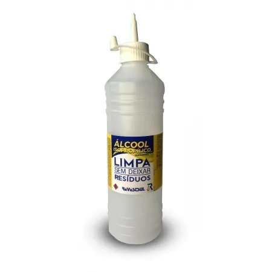

ALCOOL ISOPROPILOCO
O Álcool Isopropílico é um limpador de uso geral. Ideal para limpeza de superfícies em plástico, vidro, metal, entre outras, principalmente em situações em que se faz necessário que a superfície esteja completamente limpa para receber algum tipo de tratamento, por exemplo, aplicação de fitas adesivas, vinil, etc.
GALAO 5L
GARRAGA 1L
ALCOOL 70%
LIMPA TELAS